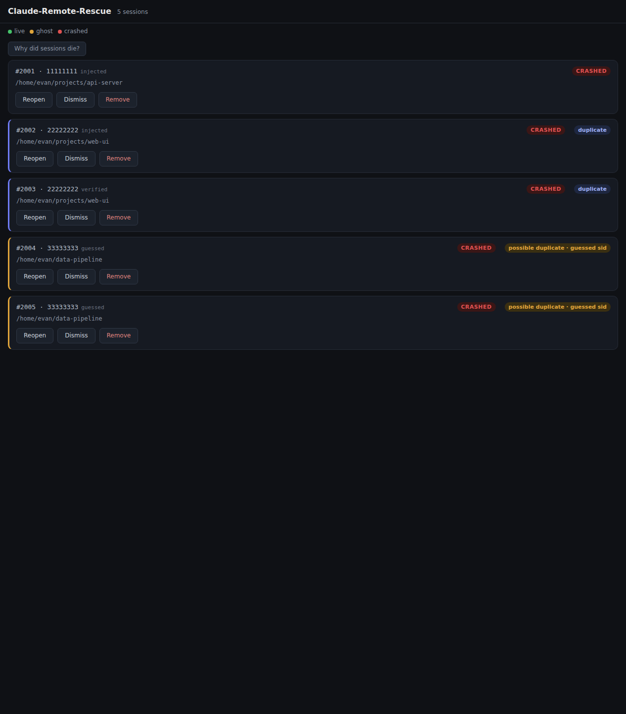

How it works
When a terminal window closes, a laptop reboots, or a VM runs out of
memory mid-conversation, Claude-Remote-Rescue notices, revives each
session (claude --resume) into tmux, and gives you a
tailnet-only web dashboard to reopen, dismiss, or remove any session
from any device. It also tells you why things died (journald
on Linux, translated to plain English).
The classifier's three states
Every destructive operation (close, dismiss, reopen) gates on the
classifier — never on bare pid existence — so a reboot-recycled pid
can never get an unrelated process killed. tmux is the
revival substrate on every platform: crashed sessions with a known
Claude session id come back as detached tmux sessions running
claude --resume, and tab adapters then attach visibly
wherever a terminal-spawner exists. On headless hosts there's no tab
to spawn, so tmux isn't a fallback — it's just where the session
lives.
Restore prompt: the once-per-boot offer
After a crash or reboot, the watchdog revives crashed sessions with a
known Claude session id into detached tmux automatically — but a
revived session parked in tmux still isn't sitting in a visible
terminal tab until something re-homes it. crr rescue-check is that something: a
shim-facing hook that every interactive shell start runs once per
boot (the bash, zsh, and fish shims all call it).
It offers to re-home whatever the reviver already parked in tmux from
the previous boot with a [Y/n] prompt, gated so at most
one shell ever prompts — even when a terminal app restores several
tabs at once, thanks to an atomic marker claim taken before either
visible outcome (the prompt or the headless notice) is printed. A
typed empty line (Enter) defaults to yes; an unattended
timeout always defaults to "not now" (15 seconds by
default) — the prompt never auto-spawns terminal tabs on its own. On
a host with no tab spawner (headless SSH, no display), the prompt
degrades to a one-line notice pointing at crr rescued or
tmux attach, the same way reopen and
detmux degrade when no spawner is available. The whole
hook is wrapped in a blanket exception guard, like every other shim
hook — it must never break the shell it's sourced into.
crr rescued lists that same candidate set on demand,
without waiting for the next shell start.
Maturity: built and covered by CLI-level tests with every adapter (tmux, tab spawner, boot identity) faked — not yet exercised against a real post-reboot shell.
Install (headless Linux)
Requires Python ≥ 3.11 and tmux. Zero runtime dependencies otherwise.
pipx install claude-remote-rescue # or: pip install --user .-
Shell shim — source it from your rc file so shells
journal themselves and
claudelaunches become identifiable:crr shim fish >> ~/.config/fish/config.fish # or: bash -> ~/.bashrc, zsh -> ~/.zshrc -
Watchdog + dashboard + keep-awake — install the user
services (autonomous revival, a dashboard that survives
logout/reboot, and the keep-awake loop):
macOS usescrr systemd --install # prints first with no args, so you can inspectcrr launchd --install. Both install three units: revive, web, andcrr-awake. The keep-awake loop does nothing until you turn it on —power_blockisoffby default (see Keeping the machine awake).
Windows/WSL is different: there is no keep-awake Scheduled Task —crr schtasks --installinstalls the watchdog and dashboard only. Runcrr awakeyourself there, or install the systemd units inside WSL. All three commands accept--uninstallto reverse the install. -
Expose the dashboard on your tailnet (loopback-only by default):
tailscale serve --bg 8377 -
Check the install:
crr doctor
Targets: headless Linux (now), macOS / Linux-desktop / Windows-WSL (later). Shells: zsh, bash, fish.
Commands
| Command | What it does |
|---|---|
crr status [--json] | List journaled sessions and their state (live / ghost / crashed) |
crr revive | Revive crashed claude sessions into detached tmux (the watchdog runs this) |
crr reopen --pid N (alias crr restore --pid N) | Revive one specific crashed or ghost session now (ghost: closes the orphaned shell and archives the conversation for revival) |
crr dismiss --pid N | Clean up a crashed session without reviving (archives it) |
crr remove --pid N | Delist a session, touch nothing else |
crr kick <pid> | Restart claude in place on the same conversation |
crr close <pid> | End a live session (remote exit); no revival |
crr detmux <pid> | Re-home a revived tmux session into a visible tab (dashboard button: Untrack — the tab still runs tmux underneath) |
crr untmux <pid> | Kill a parked tmux session and relaunch claude --resume directly in a visible tab, no tmux wrapper left behind (dashboard button: Un-tmux, confirm-gated) |
crr rescued | List conversations the reviver already parked in tmux from a previous boot, awaiting re-home |
crr diagnose [--json] | Explain why the previous boot / sessions may have died |
crr gc | Drop archive records past the retention window |
crr web [--port N] | Serve the dashboard (loopback only) |
crr awake [--once] | [service] Hold the machine awake while a Claude session is live. The loop, not a durable OS reservation: the hold is a child process of this command, so stopping it releases the hold. Off unless power_block is set. Lid close is never blocked |
crr power [--release] | Report what crr is holding awake and why — or why not. --release stops the keep-awake loop (that is the release; there is no other handle) |
crr systemd [--install|--uninstall] | Print (or install/uninstall) the Linux watchdog timer + dashboard + keep-awake (crr-awake.service) |
crr launchd [--install|--uninstall] | Print (or install/uninstall) the macOS launchd user agents (watchdog + dashboard + keep-awake) |
crr schtasks [--install|--uninstall] | Print (or install/uninstall) the Windows/WSL Scheduled Tasks (watchdog + dashboard). No keep-awake task — the command says so; run crr awake yourself or use crr systemd --install inside WSL |
crr config --effective | Every config key with its value and origin (configured / default) |
crr doctor | Install-health checklist |
crr shim <shell> | Print the shell shim to source from your rc file (fish/bash/zsh) |
crr repair-check --pid N | [shim] Read/clear a session's relaunch/close flag |
crr rescue-check | [shim] Once per boot, offer to re-home rescued conversations into visible tabs |
Keeping the machine awake
A remote Claude session dies when the machine it runs on sleeps.
crr awake is a loop that holds the machine up
only while a Claude session is actually live, and
drops the hold the moment the last one ends.
It is off by default. Nothing happens until you set
power_block to "sleep" or
"sleep+shutdown" in config.toml — and by
default the hold only applies while on AC power; on battery, or when
the power source can't be read, crr holds nothing and says so.
Closing the lid is never blocked, on any platform.
crr awake # run the loop in the foreground (Ctrl-C releases)
crr power # what is held right now, and why — or why not
crr power --release # stop the loop, which IS the release
The hold is a child process of crr awake, not a durable
OS reservation — it cannot outlive crr, and there is no separate
"unhold" button. Stopping the loop is the release, and
crr power --release is how you do it, including on a
headless host, where there's no dashboard button and this command is
the whole story: it stops the unit crr installed, or tells you to
stop your own process if you started the loop by hand.
Dashboard
A tailnet-only, loopback-bound web dashboard for reopening,
dismissing, or removing any session from any device. Each card
carries a state badge (live / ghost / crashed), the
#pid · sid8 identity, the session id's
provenance (injected / guessed /
verified), and the last human prompt.

Per-card action buttons, depending on the card's state:
Duplicate detection is confidence-weighted: two sessions that share
an injected/verified session id are a real
duplicate, while a collision involving a guessed id is
only a possible duplicate, because two --continue tabs
can guess the same newest transcript. A lazy "why did sessions die?"
panel leads with a plain-English verdict (out-of-memory, kernel
panic, unexpected shutdown, clean reboot, or "looks clean") above the
raw journald/WinEvent evidence.
Security model
The dashboard can restart and revive processes, so its security posture is deliberately conservative — full detail lives in SECURITY.md.
- Loopback-only bind. The dashboard binds to
127.0.0.1, never0.0.0.0. - The tailnet is the auth boundary. You reach the dashboard via
tailscale serveor your own authenticating reverse proxy — crr has no accounts, sessions, or passwords of its own. - Host-header allowlist (DNS-rebinding defense): requests are accepted only when
Hostexactly matches loopback, this machine's hostname, a*.ts.nettailnet name, or a configured extra. - JSON content-type required on POST, which forces a CORS preflight and neutralizes simple-request CSRF; zero
Access-Control-*headers are ever emitted. - DOM via
textContentonly — untrusted fields (cwd, last-prompt, session ids) are never written withinnerHTML. - Classifier-gated destructive ops — close/dismiss/reopen act on a session only after the classifier confirms its state, so a reboot-recycled pid can never get an unrelated process signalled.
Status
Phases 1–4 code is on main (v0.1.0): headless Linux,
plus the macOS, Linux-desktop, and Windows/WSL platform adapters, are
built, along with guessed/verified session-id tracking and the
batched status probe. This is a ground-up OSS rewrite of a private
Windows/WSL tool that survived two real outages in production (a
Windows-Update reboot and a WSL OOM crash) with zero lost
conversations.
What isn't yet verified: the macOS-runner tests (plutil,
osacompile, log show/pmset,
mac boot-identity) haven't run on this batch; any real GUI tab spawn
(macOS / Linux-desktop / wt.exe) and all Windows
integration are unrun; and the end-to-end hardware acceptance test —
kill the tmux server, reboot, watch every conversation revive and the
dashboard return over the tailnet — has not been run. These are the
next milestone.